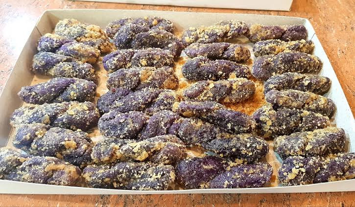

Welcome to
Zamboang City Cuisine
is a fusion of indigenous, Spanish, Malay, and Chinese influences, reflecting the rich cultural diversity of the region. Known for its bold flavors, fresh seafood, and unique dishes, it showcases the culinary heritage of the Chavacano people and other ethnic groups.
Popular foods and dessert
Paella Chavacano
- A Zamboangueño take on the famous Spanish paella, featuring yellow rice cooked with seafood, chicken, chorizo, and vegetables. It is flavored with local spices and sometimes cooked with coconut milk for a regional twist
Tiyula itum

-A Tausug black soup made with beef or chicken, flavored with burnt coconut, ginger, turmeric, and lemongrass. The black color comes from the burnt coconut, giving it a smoky and earthy taste.
Estofao chavacano
Estofado is a flavorful stew or hotpot, typically slow-cooked with meat (beef, chicken, pork, or lamb are common), vegetables (potatoes, carrots, onions, peppers are frequent), and a rich sauce often based on wine, broth, or tomatoes.
Curacha con Alavar Sauce

–A deep-sea crab (Curacha) unique to Zamboanga, served with Alavar Sauce, a rich and flavorful coconut-based sauce made with various local spices. It is considered a signature dish of the city.
Kinilaw
Kinilaw in Zamboanga City is a seafood dish featuring raw fish "cooked" by marinating it in vinegar, onions, ginger, and chili peppers. The Zamboanga version often incorporates unique local ingredients and spices, resulting in a distinctive flavor profile that sets it apart from kinilaw preparations in other regions.
Chupa Kulo

-A traditional Zamboanga City dish featuring snails simmered in squash, coconut milk, and spices. The unique way to eat it is by sucking the meat out of the snail shell.
Chikalang
-A sweet fried snack made of glutinous rice, sugar, and sesame seeds, shaped into rings and deep-fried. It is crispy on the outside and chewy inside.
Saging Prito

- A snack made with ripe saba or cardaba bananas sliced and fried until golden brown, creating a sweet and crispy treat.
Tamal Chavacano

- A Zamboangueño tamale, made of ground rice, coconut milk, and a mix of chicken or pork, wrapped in banana leaves and steamed. It has a soft, pudding-like texture and is similar to Mexican tamales but with a local flavor.
Lokot-lokot

- A crispy, golden-brown rolled rice snack made from glutinous rice flour, deep-fried to create a crunchy texture. It is a popular pasalubong (souvenir food) in Zamboanga.
Knickerbocker

–A Chavacano version of halo-halo, its a refreshing fruit dessert similar to halo-halo but without shaved ice. It consists of fresh fruits (mango, banana, watermelon, apple, etc.), jelly, and condensed milk, topped with ice cream. It was invented in Zamboanga and is a local favorite.
Mais con yelo
A refreshing dessert made with sweet corn kernels, shaved ice, evaporated milk, condensed milk, and sugar. It's a simple yet delicious treat perfect for hot weather..